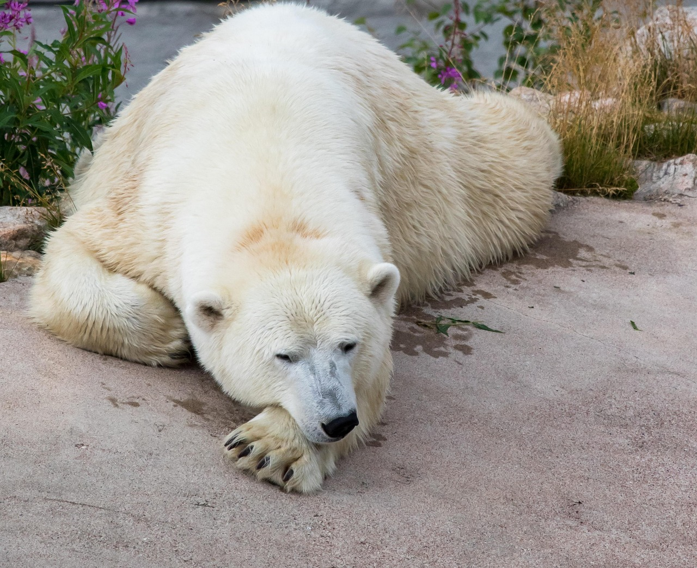
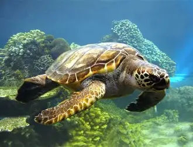
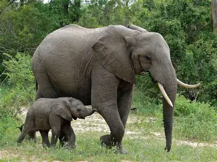
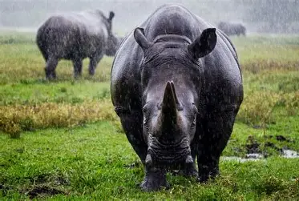
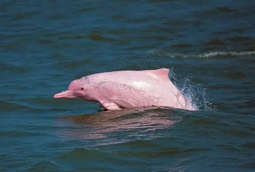
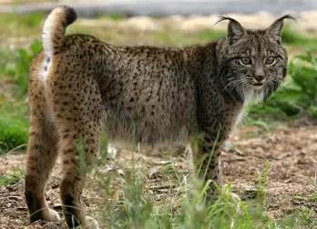
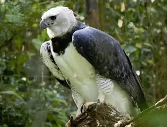

| Imagen | Motivo del peligro | Más información |
|---|---|---|
 |
Caza furtiva y pérdida de hábitat | Wikipedia |
|  | Derretimiento del hielo por cambio climático | Wikipedia |
|  | Contaminación y pesca accidental | Wikipedia |
|  | Caza furtiva por marfil y pérdida de hábitat | Wikipedia |
|  | Caza furtiva por cuerno y destrucción de hábitat | Wikipedia |
|  | Contaminación de ríos y pesca accidental | Wikipedia |
|  | Pérdida de hábitat y escasez de presas | Wikipedia |
|  | Deforestación y caza ilegal | Wikipedia |